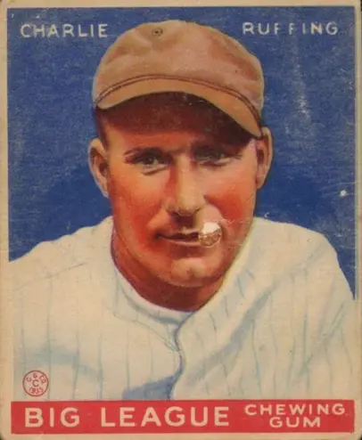

Charles Herbert Ruffing "Red"
Career Highlights & Facts
(Facts are AI-generated and may require verification)
- Lost four toes on the left foot in a childhood mining accident, which forced a permanent change in pitching mechanics.
- Recorded 273 career victories as a starting pitcher.
- Served in the military during the second global conflict, missing significant time at the peak of a career.
Would you like to find out more about Charles Herbert Ruffing?
Charles Herbert "Red" Ruffing was an American professional baseball player. A pitcher, he played in Major League Baseball (MLB) from 1924 through 1947. He played for the Boston Red Sox, New York Yankees, and Chicago White Sox in a Hall of Fame career. Ruffing is most remembered for his time with the highly successful Yankees teams of the 1930s and 1940s.
Career Totals
| WAR | W | L | ERA | G | GS | SV | IP | SO | WHIP |
|---|---|---|---|---|---|---|---|---|---|
| 68.6 | 273 | 225 | 3.80 | 624 | 538 | 18 | 4344.0 | 1987 | 1.341 |
Statistics via Baseball-Reference.com
The Original Clue